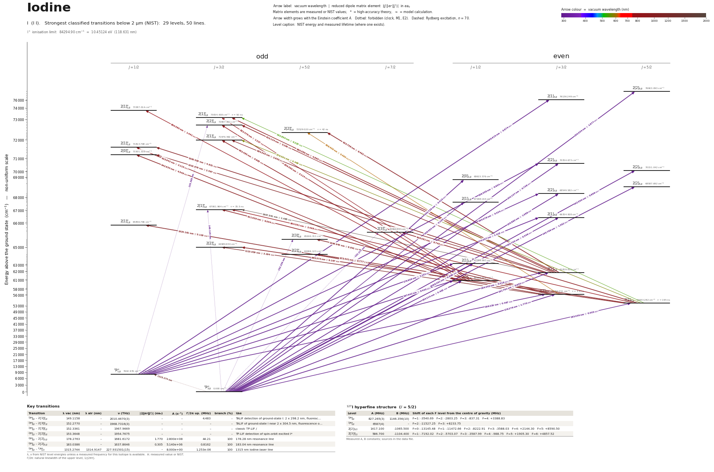

Iodine energy level diagram
Energy levels and transitions of neutral iodine (I I): the 50 strongest classified lines below 2 µm from the NIST Atomic Spectra Database and the 29 levels they connect, each line with its vacuum wavelength, frequency and, for 45 of them, the reduced dipole matrix element derived from the NIST transition rate. Measured lifetimes, transition rates, hyperfine constants and isotope shifts from the literature are included, each with its citation.
Hover a line or a level to isolate it, click to keep it selected. Scroll to zoom, drag to move.

Download: diagram (PDF) diagram (SVG) transitions (CSV) levels (CSV) source code

Key transitions of iodine
| Transition | λ vac (nm) | λ air (nm) | ν (THz) | |⟨J‖er‖J′⟩| (ea₀) | A (s⁻¹) | Γ/2π up. (MHz) | branch (%) | Use |
|---|---|---|---|---|---|---|---|---|
| 2P°3/2 – 2[1]°3/2 | 149.1158 | – | 2010.4670(3) | – | – | 4.483 | – | TALIF detection of ground-state I: 2 x 298.2 nm, fluoresc… |
| 2P°3/2 – 2[3]°7/2 | 152.2770 | – | 1968.7316(3) | – | – | – | – | TALIF of ground-state I near 2 x 304.5 nm, fluorescence o… |
| 2P°3/2 – 2[3]°5/2 | 152.3361 | – | 1967.9669 | – | – | – | – | classic TP-LIF / |
| 2P°1/2 – 2[2]°3/2 | 153.3648 | – | 1954.7675 | – | – | – | – | TP-LIF detection of spin-orbit excited I* |
| 2P°3/2 – 2[2]3/2 | 178.2763 | – | 1681.6172 | 1.770 | 2.800e+08 | 44.21 | 100 | 178.28 nm resonance line |
| 2P°3/2 – 2[2]5/2 | 183.0386 | – | 1637.8646 | 0.305 | 5.140e+06 | 0.8162 | 100 | 183.04 nm resonance line |
| 2P°3/2 – 2P°1/2 | 1315.2744 | 1314.9147 | 227.931501(15) | – | 8.000e+00 | 1.253e-06 | 100 | 1315 nm iodine-laser line |
λ, ν from NIST level energies unless a measured frequency for this isotope is available. A: measured value or NIST. Γ/2π: natural linewidth of the upper level, 1/(2πτ).
127I hyperfine structure (I = 5/2)
| Level | A (MHz) | B (MHz) | Shift of each F level from the centre of gravity (MHz) |
|---|---|---|---|
| 2P°3/2 | 827.265(3) | 1146.356(10) | F=1: -3540.69 F=2: -2803.25 F=3: -837.31 F=4: +3388.83 |
| 2P°1/2 | 6587(4) | – | F=2: -11527.25 F=3: +8233.75 |
| 2[2]5/2 | 1417.100 | -1065.500 | F=0: -13145.48 F=1: -11472.66 F=2: -8222.91 F=3: -3588.03 F=4: +2144.30 F=5: +8590.50 |
| 2[3]°7/2 | 586.700 | -1104.400 | F=1: -7192.02 F=2: -5703.07 F=3: -3587.99 F=4: -988.75 F=5: +1905.30 F=6: +4857.52 |
Measured A, B constants; sources in the data file.
Listed I transitions below 2 µm
| Lower level | Upper level | λ vacuum (nm) | λ air (nm) | ν (THz) | Type | |⟨J‖er‖J′⟩| (ea₀) | A (s⁻¹) | Branching (%) | Source of matrix element / A |
|---|---|---|---|---|---|---|---|---|---|
| 2P°3/2 | 2[2]5/2 | 130.0338 | – | 2305.4967 | E1 | 1.977 NIST | 6.000e+08 NIST | – | NIST ASD (accuracy E) |
| 2P°3/2 | 2[2]3/2 | 142.1370 | – | 2109.1800 | E1 | 0.738 NIST | 9.600e+07 NIST | – | NIST ASD (accuracy C) |
| 2P°3/2 | 2[2]5/2 | 142.5496 | – | 2103.0753 | E1 | 0.998 NIST | 1.160e+08 NIST | – | NIST ASD (accuracy D+) |
| 2P°3/2 | 2[0]1/2 | 145.7395 | – | 2057.0432 | E1 | 0.410 NIST | 5.500e+07 NIST | – | NIST ASD (accuracy D+) |
| 2P°3/2 | 2[2]5/2 | 145.7988 | – | 2056.2073 | E1 | 1.382 NIST | 2.080e+08 NIST | – | NIST ASD (accuracy C+) |
| 2P°3/2 | 2[2]3/2 | 145.8798 | – | 2055.0648 | E1 | 1.068 NIST | 1.860e+08 NIST | – | NIST ASD (accuracy C) |
| 2P°1/2 | 2[1]3/2 | 145.9145 | – | 2054.5758 | E1 | 0.674 NIST | 7.400e+07 NIST | – | NIST ASD (accuracy C) |
| 2P°3/2 | 2[1]1/2 | 148.5925 | – | 2017.5482 | E1 | 0.105 NIST | 3.400e+06 NIST | – | NIST ASD (accuracy E) |
| 2P°3/2 | 2[1]°3/2 | 149.1158 | – | 2010.4670 | two-photon | – | – | – | – |
| 2P°3/2 | 2[1]3/2 | 150.7047 | – | 1989.2707 | E1 | 0.346 NIST | 1.770e+07 NIST | – | NIST ASD (accuracy D) |
| 2P°3/2 | 2[3]°7/2 | 152.2770 | – | 1968.7316 | two-photon | – | – | – | – |
| 2P°3/2 | 2[3]°5/2 | 152.3361 | – | 1967.9669 | two-photon | – | – | – | – |
| 2P°1/2 | 2[2]°3/2 | 153.3648 | – | 1954.7675 | two-photon | – | – | – | – |
| 2P°3/2 | 2[1]1/2 | 158.2614 | – | 1894.2865 | E1 | 0.983 NIST | 2.470e+08 NIST | – | NIST ASD (accuracy C) |
| 2P°1/2 | 2[2]3/2 | 159.3582 | – | 1881.2485 | E1 | 0.954 NIST | 1.140e+08 NIST | – | NIST ASD (accuracy D) |
| 2P°3/2 | 2[1]3/2 | 161.7610 | – | 1853.3053 | E1 | 0.950 NIST | 1.080e+08 NIST | – | NIST ASD (accuracy C) |
| 2P°1/2 | 2[2]3/2 | 164.0780 | – | 1827.1333 | E1 | 0.424 NIST | 2.060e+07 NIST | – | NIST ASD (accuracy E) |
| 2P°3/2 | 2[0]1/2 | 164.2142 | – | 1825.6184 | E1 | 0.402 NIST | 3.700e+07 NIST | – | NIST ASD (accuracy D) |
| 2P°1/2 | 2[1]3/2 | 170.2071 | – | 1761.3392 | E1 | 1.413 NIST | 2.050e+08 NIST | – | NIST ASD (accuracy D) |
| 2P°3/2 | 2[2]3/2 | 178.2763 | – | 1681.6172 | E1 | 1.770 measured | 2.800e+08 measured | 100 | Lawrence 1967 (from the 3.6 ns phase-shift lifetime and intermediate-coupling branching),… |
| 2P°1/2 | 2[1]1/2 | 179.9091 | – | 1666.3550 | E1 | 1.101 NIST | 2.110e+08 NIST | – | NIST ASD (accuracy C) |
| 2P°3/2 | 2[2]5/2 | 183.0386 | – | 1637.8646 | E1 | 0.305 measured | 5.140e+06 measured | 100 | NIST ASD (accuracy C+), consistent with the Spietz et al. 2001 lifetime 195(29) ns |
| 2P°1/2 | 2[1]3/2 | 184.4452 | – | 1625.3738 | E1 | 0.416 NIST | 1.400e+07 NIST | – | NIST ASD (accuracy D) |
| 2P°1/2 | 2[0]1/2 | 187.6416 | – | 1597.6869 | E1 | 0.435 NIST | 2.900e+07 NIST | – | NIST ASD (accuracy D) |
| 2P°1/2 | 2[2]3/2 | 206.2292 | 206.1633 | 1453.6857 | E1 | 0.467 NIST | 1.260e+07 NIST | 4.54 | NIST ASD (accuracy D) |
| 2[2]5/2 | 2[1]°3/2 | 542.8541 | 542.7032 | 552.2523 | E1 | 0.225 NIST | 1.600e+05 NIST | 0.8 | NIST ASD (accuracy E) |
| 2[2]5/2 | 2[1]°3/2 | 576.5912 | 576.4313 | 519.9393 | E1 | 0.469 NIST | 5.800e+05 NIST | – | NIST ASD (accuracy D) |
| 2[2]3/2 | 2[2]°5/2 | 608.4091 | 608.2407 | 492.7481 | E1 | 0.490 NIST | 3.600e+05 NIST | 1.51 | NIST ASD (accuracy D+) |
| 2[0]1/2 | 2[1]°1/2 | 800.5803 | 800.3601 | 374.4690 | E1 | 1.441 NIST | 4.100e+06 NIST | – | NIST ASD (accuracy E) |
| 2[2]5/2 | 2[1]°3/2 | 804.5905 | 804.3693 | 372.6025 | E1 | 2.498 NIST | 6.070e+06 NIST | 21.6 | NIST ASD (accuracy C+) |
| 2[0]1/2 | 2[1]°3/2 | 822.4791 | 822.2530 | 364.4986 | E1 | 1.227 NIST | 1.370e+06 NIST | 6.85 | NIST ASD (accuracy E) |
| 2[0]1/2 | 2[2]°3/2 | 839.5652 | 839.3345 | 357.0806 | E1 | 3.114 NIST | 8.300e+06 NIST | – | NIST ASD (accuracy C) |
| 2[1]3/2 | 2[1]°3/2 | 890.0894 | 889.8451 | 336.8116 | E1 | 4.865 NIST | 1.700e+07 NIST | 85 | NIST ASD (accuracy D+) |
| 2[0]1/2 | 2[1]°3/2 | 902.4849 | 902.2372 | 332.1856 | E1 | 5.663 NIST | 2.210e+07 NIST | – | NIST ASD (accuracy C+) |
| 2[2]5/2 | 2[3]°7/2 | 906.0811 | 905.8325 | 330.8671 | E1 | 9.740 NIST | 3.230e+07 NIST | – | NIST ASD (accuracy B) |
| 2[1]3/2 | 2[2]°3/2 | 910.1343 | 909.8845 | 329.3937 | E1 | 5.290 NIST | 1.880e+07 NIST | – | NIST ASD (accuracy C+) |
| 2[2]3/2 | 2[1]°3/2 | 911.6391 | 911.3890 | 328.8499 | E1 | 6.054 NIST | 2.450e+07 NIST | 87 | NIST ASD (accuracy B) |
| 2[0]1/2 | 2[1]°1/2 | 915.9419 | 915.6905 | 327.3051 | E1 | 2.115 NIST | 5.900e+06 NIST | – | NIST ASD (accuracy E) |
| 2[1]3/2 | 2[2]°5/2 | 933.7584 | 933.5022 | 321.0600 | E1 | 8.462 NIST | 2.970e+07 NIST | 100 | NIST ASD (accuracy B) |
| 2[0]1/2 | 2[0]°1/2 | 942.9299 | 942.6713 | 317.9372 | E1 | 4.549 NIST | 2.500e+07 NIST | – | NIST ASD (accuracy D) |
| 2[2]5/2 | 2[2]°3/2 | 965.5727 | 965.3079 | 310.4815 | E1 | 6.167 NIST | 2.140e+07 NIST | – | NIST ASD (accuracy B) |
| 2[2]5/2 | 2[2]°5/2 | 973.4405 | 973.1736 | 307.9720 | E1 | 8.777 NIST | 2.820e+07 NIST | – | NIST ASD (accuracy B) |
| 2[1]3/2 | 2[1]°3/2 | 984.5446 | 984.2747 | 304.4986 | E1 | 2.640 NIST | 3.700e+06 NIST | – | NIST ASD (accuracy E) |
| 2[1]3/2 | 2[1]°1/2 | 1000.5817 | 1000.3074 | 299.6182 | E1 | 4.831 NIST | 2.360e+07 NIST | – | NIST ASD (accuracy D+) |
| 2[2]3/2 | 2[1]°1/2 | 1024.1615 | 1023.8809 | 292.7199 | E1 | 5.128 NIST | 2.480e+07 NIST | – | NIST ASD (accuracy B) |
| 2[1]3/2 | 2[0]°1/2 | 1032.8759 | 1032.5929 | 290.2502 | E1 | 2.597 NIST | 6.200e+06 NIST | – | NIST ASD (accuracy E) |
| 2[2]3/2 | 2[3]°5/2 | 1046.9450 | 1046.6582 | 286.3498 | E1 | 8.841 NIST | 2.300e+07 NIST | – | NIST ASD (accuracy B) |
| 2[2]3/2 | 2[2]°3/2 | 1123.9594 | 1123.6517 | 266.7289 | E1 | 3.264 NIST | 3.800e+06 NIST | – | NIST ASD (accuracy B) |
| 2P°3/2 | 2P°1/2 | 1315.2744 | 1314.9147 | 227.9315 | M1 | – | 8.000e+00 measured | 100 | NIST ASD lines table, I I 1315.27441 nm M1, accuracy C (tp_ref T4552) |
| 2[1]3/2 | 2[1]°3/2 | 1907.5405 | 1907.0198 | 157.1618 | E1 | 1.485 NIST | 1.610e+05 NIST | 0.57 | NIST ASD (accuracy D+) |
Reduced dipole matrix elements follow the convention A = ω³|d|²/(3πε₀ħc³(2J′+1)), with J′ the upper level. Tags show where a number comes from: measured, NIST compilation, high-accuracy theory, or a model calculation.
I energy levels
| Level | Energy (cm⁻¹) | J | Parity | Lifetime | gJ | Hyperfine A (MHz) | Hyperfine B (MHz) | Lifetime source | Hyperfine source |
|---|---|---|---|---|---|---|---|---|---|
| 2P°3/2 | 0.000 | 3/2 | odd | stable | – | 827.265 | 1146.36 | – | Jaccarino, King, Satten, Stroke, Phys. Rev. 94, 1798 (1954) (atomic-beam magnetic resonan… |
| 2P°1/2 | 7602.976 | 1/2 | odd | 127 ms measured | 0.673 | 6587 | – | Lilenfeld, Richardson, Hovis, J. Chem. Phys. 74, 2129 (1981); Table IV of Filin, Savukov,… | Luc-Koenig, Morillon, Verges, Physica 70, 175 (1973) (FT spectroscopy): hyperfine levels … |
| 2[2]5/2 | 54633.282 | 5/2 | even | 195 ns measured | 1.576 | 1417.1 | -1065.5 | Spietz, Gross, Smalins, Orphal, Burrows, Spectrochim. Acta B 56, 2465 (2001); Table IV of… | Luc-Koenig, Morillon, Verges, Physica Scripta 12, 199 (1975) (infrared Fourier-transform … |
| 2[2]3/2 | 56092.711 | 3/2 | even | 3.6 ns measured | 1.385 | – | – | G. M. Lawrence, Astrophys. J. 148, 261 (1967), Table 7 (phase-shift method, stated accura… | – |
| 2[0]1/2 | 60896.074 | 1/2 | even | – | 2.561 | – | – | – | – |
| 2[1]3/2 | 61819.611 | 3/2 | even | – | 1.618 | – | – | – | – |
| 2[1]1/2 | 63186.597 | 1/2 | even | – | 0.799 | – | – | – | – |
| 2[2]°5/2 | 64906.123 | 5/2 | odd | – | 1.524 | – | – | – | – |
| 2[2]°3/2 | 64989.830 | 3/2 | odd | – | 1.619 | – | – | – | – |
| 2[3]°5/2 | 65644.311 | 5/2 | odd | – | 1.217 | – | – | – | – |
| 2[3]°7/2 | 65669.821 | 7/2 | odd | – | 1.42 | 586.7 | -1104.4 | – | Luc-Koenig, Morillon, Verges, Physica Scripta 12, 199 (1975) (infrared Fourier-transform … |
| 2[1]°1/2 | 65856.796 | 1/2 | odd | – | 1.556 | – | – | – | – |
| 2[1]3/2 | 66354.928 | 3/2 | even | – | – | – | – | – | – |
| 2[1]°3/2 | 67061.964 | 3/2 | odd | 35.5 ns measured | 1.415 | – | – | Esteves, Blondel, Chabert, Drag, J. Phys. B 56, 055002 (2023) (TALIF decay extrapolated t… | – |
| 2[1]1/2 | 67298.164 | 1/2 | even | – | – | – | – | – | – |
| 2[2]3/2 | 68549.582 | 3/2 | even | – | – | – | – | – | – |
| 2[2]5/2 | 68587.692 | 5/2 | even | – | – | – | – | – | – |
| 2[0]1/2 | 68615.576 | 1/2 | even | – | – | – | – | – | – |
| 2[2]5/2 | 70151.042 | 5/2 | even | – | – | – | – | – | – |
| 2[2]3/2 | 70354.673 | 3/2 | even | – | – | – | – | – | – |
| 2[0]°1/2 | 71501.316 | 1/2 | odd | – | 1.239 | – | – | – | – |
| 2[1]°1/2 | 71813.798 | 1/2 | odd | – | 1.377 | – | – | – | – |
| 2[1]°3/2 | 71976.592 | 3/2 | odd | – | 1.317 | – | – | – | – |
| 2[2]°5/2 | 72529.020 | 5/2 | odd | 42 ns measured | 1.37 | – | – | Kono & Hattori, J. Opt. Soc. Am. 69, 253 (1979) (delayed coincidence), abstract ('4D5/2')… | – |
| 2[2]°3/2 | 72807.001 | 3/2 | odd | – | 1.316 | – | – | – | – |
| 2[1]°3/2 | 73054.438 | 3/2 | odd | 50 ns measured | 1.329 | – | – | Kono & Hattori, J. Opt. Soc. Am. 69, 253 (1979) (delayed coincidence), abstract ('2P3/2')… | – |
| 2[1]°1/2 | 73387.014 | 1/2 | odd | – | 1.137 | – | – | – | – |
| 2[1]3/2 | 76136.249 | 3/2 | even | – | 1.04 | – | – | – | – |
| 2[2]5/2 | 76903.093 | 5/2 | even | – | – | – | – | – | – |
I⁺ ionisation limit 84294.90 cm⁻¹ = 10.45124 eV (118.631 nm)
Sources
- Cerny, Bacis, Bussery, Nota, Verges, J. Chem. Phys. 95, 5790 (1991): 7602.9765(5) cm^-1, …
- Esteves, Blondel, Chabert, Drag, J. Phys. B 56, 055002 (2023) (TALIF decay extrapolated t…
- Esteves, Blondel, Chabert, Drag, J. Phys. B 56, 055002 (2023): two-photon level energy 65…
- Esteves, Blondel, Chabert, Drag, J. Phys. B 56, 055002 (2023): two-photon level energy 67…
- G. M. Lawrence, Astrophys. J. 148, 261 (1967), Table 7 (phase-shift method, stated accura…
- Jaccarino, King, Satten, Stroke, Phys. Rev. 94, 1798 (1954) (atomic-beam magnetic resonan…
- Kono & Hattori, J. Opt. Soc. Am. 69, 253 (1979) (delayed coincidence), abstract ('2P3/2')…
- Kono & Hattori, J. Opt. Soc. Am. 69, 253 (1979) (delayed coincidence), abstract ('4D5/2')…
- Lawrence 1967 (from the 3.6 ns phase-shift lifetime and intermediate-coupling branching),…
- Lilenfeld, Richardson, Hovis, J. Chem. Phys. 74, 2129 (1981); Table IV of Filin, Savukov,…
- Luc-Koenig, Morillon, Verges, Physica 70, 175 (1973) (FT spectroscopy): hyperfine levels …
- Luc-Koenig, Morillon, Verges, Physica Scripta 12, 199 (1975) (infrared Fourier-transform …
- Luc-Koenig, Morillon, Verges, Physica Scripta 12, 199 (1975) (infrared Fourier-transform …
- NIST ASD
- NIST ASD level energies
- NIST ASD lines table, I I 1315.27441 nm M1, accuracy C (tp_ref T4552)
- NIST ASD, consistent with the Spietz et al. 2001 lifetime 195(29) ns
- Spietz, Gross, Smalins, Orphal, Burrows, Spectrochim. Acta B 56, 2465 (2001); Table IV of…
Literature search was limited: the session's web-search quota was exhausted, so sources were located through Crossref, HAL, OSTI, arXiv and NASA ADS queries and only open copies could be read (IOP, Elsevier, APS full texts were not accessible). Hyperfine constants: Casimir convention E = A*C/2 + B*[3C(C+1) - 4I(I+1)J(J+1)]/[8I(2I-1)J(2J-1)] with C = F(F+1) - I(I+1) - J(J+1), I = 5/2; the Luc-Koenig constants are quoted second-hand in 1e-3 cm^-1 and converted to MHz here. Two-photon entries: wavelength_vac_nm is the laser wavelength and frequency_THz the two-photon sum frequency (level energy), both for hyperfine barycentres. Air wavelengths of the fluorescence lines (804.4, 905.8, 911.4 nm) are as printed by Esteves et al. The extra keys energy_cm, quenching, E2_to_M1_ratio, absorption_cross_section and hyperfine_components are not in the schema and can be ignored by the pipeline.
Atoms with measured data
- Lithium-632 levels, 85 lines
- Lithium-732 levels, 85 lines
- Beryllium-915 levels, 24 lines
- Sodium-2336 levels, 106 lines
- Magnesium-2418 levels, 61 lines
- Magnesium-2518 levels, 61 lines
- Potassium-3934 levels, 84 lines
- Potassium-4034 levels, 84 lines
- Potassium-4134 levels, 84 lines
- Calcium-4035 levels, 61 lines
- Calcium-4335 levels, 61 lines
- Rubidium-8536 levels, 94 lines
- Rubidium-8736 levels, 94 lines
- Strontium-8740 levels, 70 lines
- Strontium-8840 levels, 70 lines
- Caesium-13331 levels, 79 lines
- Barium-13744 levels, 89 lines
- Barium-13844 levels, 89 lines
- Dysprosium-16339 levels, 55 lines
- Dysprosium-16439 levels, 55 lines
- Ytterbium-17118 levels, 26 lines
- Ytterbium-17418 levels, 26 lines